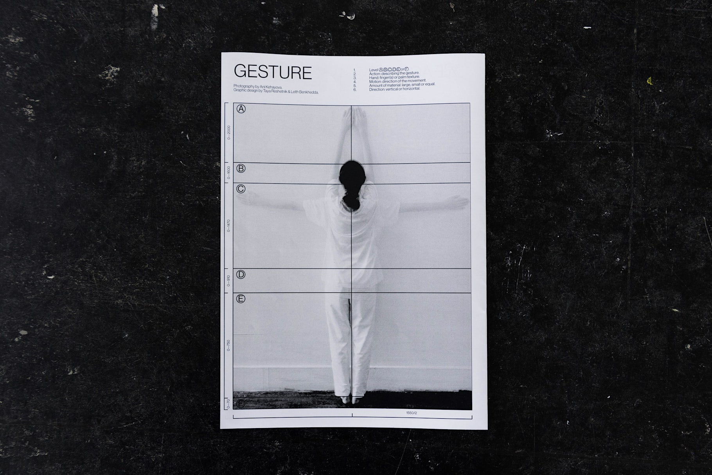
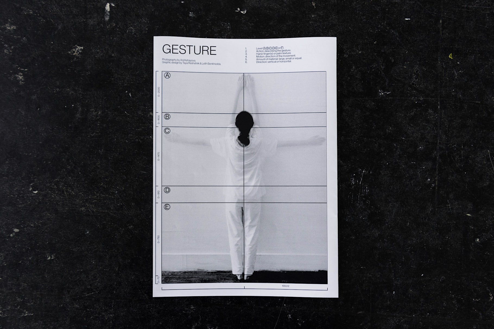

Anthropometry:
The Ornament of Gesture
Graduation Project (2018)
Design for spatial decorative ornament produced with 100% pure transparent silicone sealant. Applied directly by hand onto plain walls, it blends with space by creating reliefs within the regular surface.
100% removable, long-lasting, waterproof add-on for interior.
In architecture, as well as in interior design, ornaments have played an important role in emphasising, amplifying space but also in creating an organic relation to culture and style. When decoration was a craft, it used to exceed from being just an extra layer in space—thus, it has formally transformed the way we characterise and identify a space.
In some moral grounds, it has been stated that because of the mass production and its vast growth, the craft of making ornaments became detached from the human gesture, and we simply have grown out of it. The space for improvement or new ideas seem to have blurred, so did the physical connection between the human and the building.
In this spatial project I am rethinking the impact of gesture as an ornament on architectural space. By showcasing the representative function of the white wall and not perceiving it as a limit to prevent bodies from freedom of movement, the human reconfigures itself as a design tool. With a new methodology of actions, gestural language is translated into an ornament where the body proportions react to the hierarchy of the given space.
Material research, interior setting, publication, performance, video production
On sand:
Glass Bowls
(2016)
In architecture, as well as in interior design, ornaments have played an important role in emphasizing, amplifying space but also in creating an organic relation to culture and style. When decoration was a craft, it used to exceed from being just an extra layer in space—thus, it has formally transformed the way we characterise and identify a space.
In some moral grounds, it has been stated that because of the mass production and its vast growth, the craft of making ornaments became detached from the human gesture, and we simply have grown out of it. The space for improvement or new ideas seem to have blurred, so did the physical connection between the human and the building.
In this spatial project, I am rethinking the impact of gesture as an ornament on architectural space. By showcasing the representative function of the white wall and not perceiving it as a limit to prevent bodies from freedom of movement, the human reconfigures itself as a design tool. With a new methodology of actions, gestural language is translated into an ornament where the body proportions react to the hierarchy of the chosen space.
Materials: pure transparent silicone sealant, water


 


.jpg)
.jpg)

.jpg)